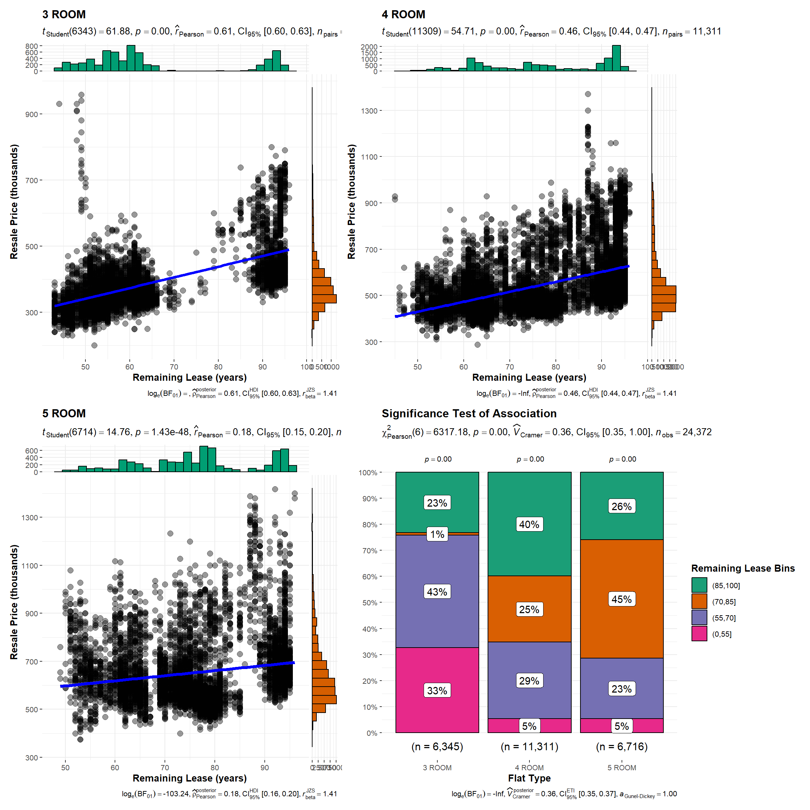
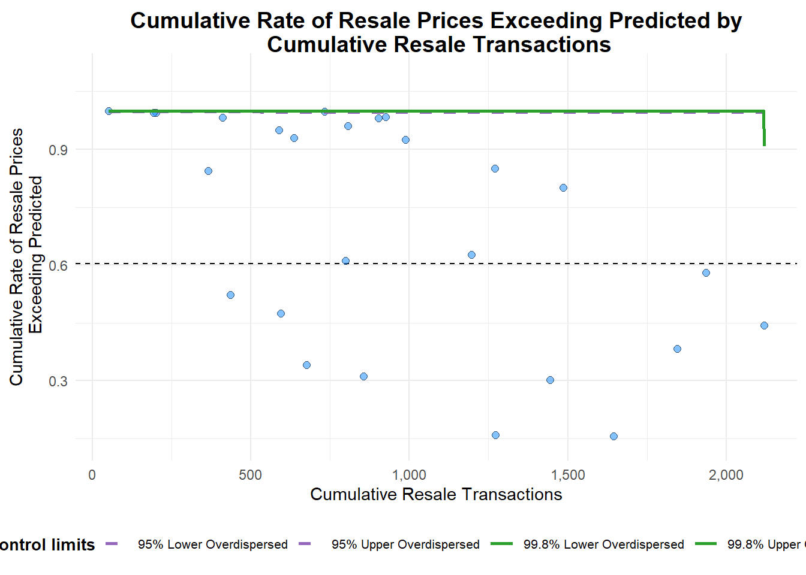
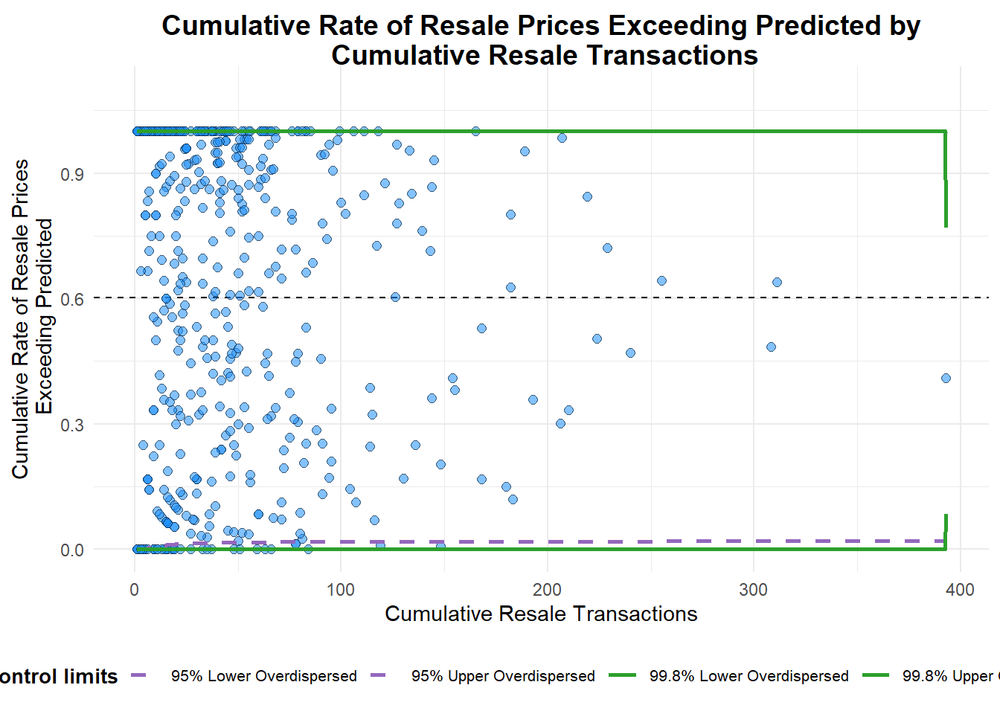

pacman::p_load(ggstatsplot, performance, ggiraph, plotly, FunnelPlotR, tidyverse, patchwork)Resale Prices
In this exercise, we are tasked with statistical analysis, prediction and data visualisations using a dataset of HDB resale prices for sales registered since 1 January 2017 (source: Data.gov.sg).
Loading packages and importing dataset
resale_data <- read_csv("data/resale-flat-prices-based-on-registration-date-from-jan-2017-onwards.csv")As the assignment requires us to focus our study on the time period 2022 and the flat types “3-ROOM”, “4-ROOM” and “5-ROOM”, we can filter the required data as follows:
resale_data2022 <- resale_data %>%
filter(grepl("2022", month), flat_type == "3 ROOM" | flat_type == "4 ROOM" | flat_type == "5 ROOM")1. Resale prices by flat type
Description:
We wish to compare resale prices by flat-type. Since it is expected that resale prices would be higher for larger flats (assuming “larger” refers to number of rooms, therefore e.g. 5-room flats are more expensive than 4-room flats), we will instead use price per square foot (psf) as our measure. Price psf is often used in the property sector.
A common assumption is that larger units would have lower price psf. We can investigate if this is true, while examining the means and distributions of prices psf for each flat-type. We first compute price psf (using 1 sqm = 10.764 sqft), then use ggbetweenstats() to conduct a One-way ANOVA test on price psf by flat-type.
resale_data2022_psf <- resale_data2022 %>%
mutate(RPpsf = (resale_price/floor_area_sqm)/10.764) ggbetweenstats(
data = resale_data2022_psf,
x = flat_type,
y = RPpsf,
type = "p",
pairwise.comparisons = TRUE,
pairwise.display = "s",
messages = FALSE,
xlab = "Flat Type",
ylab = "Price per Square Foot",
title = "One-way ANOVA test on Price per square foot by flat type",
subtitle = "Resale prices for 3, 4 and 5-room HDB flats in 2022"
## Note that we can go along with default method ("holm") for p-value adjustment
)
Patterns revealed:
First, we note that the differences between the mean prices psf of the three flat-types are statistically significant at the 95% confidence level. Second, we see that the mean price psf for 4-room flats is higher than that for 3-room flats, going against the usual assumption. However, it is also observed that the distance between mean and median, as well as the distance between the median and the maximum value (excluding outliers), are much higher for 4-room flats compared to the other two flat-types. There is more variance at the upper end of prices psf for 4-room flats.
2. Correlation between Resale Price and Remaining Lease
Description:
It is expected that the remaining lease on a flat would influence its resale price. We’re interested to find out if there is a difference in the strengths of the correlations across the three flat-types. To visualise this, we use ggscatterstats(). In addition, we can investigate whether remaining lease is independent of or associated with flat-type, using ggbarstats(). We can display these charts in a 2x2 grid using the patchwork package.
However, before using either, we need to convert the remaining lease values to numeric data. From examining the data, we note that remaining lease ranges from 43 to 96 years, when rounded down to the nearest year. We use mutate() and substr() to extract the number of years to a new column.
resale_data2022_yy <- resale_data2022 %>%
mutate(rl_yy = as.numeric(substr(remaining_lease, start=1, stop=2)))# Scatterplots with marginal distributions and statistical results,
# for remaining lease and resale price, three flat types.
p1 <- ggscatterstats(
data = filter(.data=resale_data2022_yy, flat_type == "3 ROOM"),
x = rl_yy,
y = resale_price,
xlab = "Remaining Lease (years)",
ylab = "Resale Price (thousands)",
title = "3 ROOM"
) +
scale_y_continuous(breaks = seq(100000, 1500000, 200000),
labels = seq(100, 1500, 200))
p2 <- ggscatterstats(
data = filter(.data=resale_data2022_yy, flat_type == "4 ROOM"),
x = rl_yy,
y = resale_price,
xlab = "Remaining Lease (years)",
ylab = "Resale Price (thousands)",
title = "4 ROOM"
) +
scale_y_continuous(breaks = seq(100000, 1500000, 200000),
labels = seq(100, 1500, 200))
p3 <- ggscatterstats(
data = filter(.data=resale_data2022_yy, flat_type == "5 ROOM"),
x = rl_yy,
y = resale_price,
xlab = "Remaining Lease (years)",
ylab = "Resale Price (thousands)",
title = "5 ROOM"
) +
scale_y_continuous(breaks = seq(100000, 1500000, 200000),
labels = seq(100, 1500, 200))
## Stacked bar charts with statistical tests,
## for test of association between flat type and remaining lease
resale_data2022_yy1 <- resale_data2022_yy %>%
mutate(rl_yy_bins = cut(rl_yy, breaks = c(0,55,70,85,100))
)
p4 <- ggbarstats(resale_data2022_yy1,
x = rl_yy_bins,
y = flat_type,
title = "Significance Test of Association",
legend.title = "Remaining Lease Bins",
xlab = "Flat Type")
p1 + p2 + p3 + p4
Patterns revealed:
There is significant linear relationship between remaining lease and resale price for all three flat-types. The Pearson’s correlation coefficient shows positive relationship for all three flat-types, and is strongest for 3-room flats while weakest for 5-room flats. We are also able to observe this from the scatterplots, which show greatest distribution of points for 5-room flats. The marginal distributions for each flat-type indicate that while resale prices are somewhat normally distributed, remaining lease years are not. The latter is reflected in the stacked bar charts and test results, which show significant association between flat-type and remaining lease.
3. Regression model for Resale Price
Description:
We would like to be able to predict resale price based on a flat’s characteristics, by building a regression model using lm(). We will use number of rooms, storey range, floor area and remaining lease. As there are currently 17 categories in storey range, we will reduce it to five categories by creating a category for 13th storey and above. Then we will convert the desired character columns to factors, so that R automatically treats those variables as reference dummies when running the regression.
We will also use check_model() to check that the model satisfies the assumptions for a multiple linear regression model.
Although address (town, street name and block) is expected to affect resale price, there would be too many addresses with too few observations each, hence we exclude it from the model. Flat model is also omitted as the metadata does not include an explanation for this variable.
for_regression <- resale_data2022_yy %>%
mutate(start_range = if_else(
storey_range == "01 TO 03" |
storey_range == "04 TO 06" |
storey_range == "07 TO 09" |
storey_range == "10 TO 12", storey_range, "13 OR MORE")) %>%
mutate_at(c("flat_type", "start_range"), as.factor)rp_model <- lm(resale_price ~ flat_type + start_range +
floor_area_sqm + rl_yy, data = for_regression)check_model(rp_model)
rp_model1 <- lm(resale_price ~ start_range +
floor_area_sqm + rl_yy, data = for_regression)
summary(rp_model1)
Call:
lm(formula = resale_price ~ start_range + floor_area_sqm + rl_yy,
data = for_regression)
Residuals:
Min 1Q Median 3Q Max
-265726 -64778 -19495 35269 715432
Coefficients:
Estimate Std. Error t value Pr(>|t|)
(Intercept) -135848.89 4568.41 -29.737 <2e-16 ***
start_range04 TO 06 19395.70 2179.50 8.899 <2e-16 ***
start_range07 TO 09 35285.45 2211.63 15.954 <2e-16 ***
start_range10 TO 12 42229.18 2281.88 18.506 <2e-16 ***
start_range13 OR MORE 129110.46 2273.17 56.798 <2e-16 ***
floor_area_sqm 4176.22 35.69 117.005 <2e-16 ***
rl_yy 3136.99 47.90 65.497 <2e-16 ***
---
Signif. codes: 0 '***' 0.001 '**' 0.01 '*' 0.05 '.' 0.1 ' ' 1
Residual standard error: 105500 on 24365 degrees of freedom
Multiple R-squared: 0.5542, Adjusted R-squared: 0.554
F-statistic: 5047 on 6 and 24365 DF, p-value: < 2.2e-16
Patterns revealed:
As there was high collinearity observed between flat type and floor area in the first regression model, we ran another regression model which excluded flat type. The results show significant linear relationships between each independent variable and resale price, at 95% confidence level. It is observed that flats on higher storeys command higher resale prices, all other variables kept equal. The large coefficients for floor area and remaining lease years also show strong influence on resale price. However, adjusted R-squared indicates this model explains only 55% of variability, suggesting that there are other factors to consider when predicting resale price.
4. Uncertainty in mean Resale Price
Description:
We would like to visualise the uncertainty of point estimates with regard to mean resale prices by flat type. We can do this using geom_errorbar() with interactive mean points which show the 95% confidence interval. However, first we need to group observations and tabulate count, mean, standard deviation and standard error for each group.
my_sum <- resale_data2022 %>%
group_by(flat_type) %>%
summarise(
n = n(),
mean = mean(resale_price),
sd = sd(resale_price)
) %>%
mutate(se = sd/sqrt(n-1))
my_sum# A tibble: 3 × 5
flat_type n mean sd se
<chr> <int> <dbl> <dbl> <dbl>
1 3 ROOM 6345 388904. 85288. 1071.
2 4 ROOM 11311 549079. 129347. 1216.
3 5 ROOM 6716 654373. 144236. 1760.tcrit <- qnorm(0.025)
my_sum$tooltip <- c(paste0(
"Flat type = ", my_sum$flat_type,
"\n N = ", my_sum$n,
"\n Avg. Resale Price = ", as.integer(my_sum$mean),
"\n 95% CI: [", as.integer(my_sum$mean+(tcrit*my_sum$se)), " , ", as.integer(my_sum$mean-(tcrit*my_sum$se)), "]"
))
p <- ggplot(my_sum) +
geom_errorbar(
aes(x = reorder(flat_type, -mean), ymin = mean+(tcrit*se), ymax = mean-(tcrit*se)),
width = 0.2, colour = "black", alpha = 0.9, size = 0.5) +
scale_y_continuous(breaks = seq(400000, 700000, 50000),
labels = seq(400, 700, 50)) +
geom_point_interactive(
aes(x = reorder(flat_type, -mean), y = mean, tooltip = my_sum$tooltip),
stat = "identity", colour = "red", size = 1.5, alpha = 1) +
ggtitle("Standard error of mean resale price by flat type") +
labs(x = "Flat Type", y = "Resale Price (thousands)")
girafe(ggobj = p,
width_svg = 8,
height_svg = 8*0.618
)
Patterns revealed:
The above shows that the mean resale price for 5-room flats has the widest 95% confidence interval. (Given the differences in mean resale price for the three flat types and the constraints of the plot, it is a bit difficult to see the exact values in each confidence interval. However the interactive mean points display these clearly for the reader.)
X. Street performance (resale prices that exceed predicted)
Description:
Let’s say we wish to compare the performance of different towns or different streets in Singapore, where performance is measured by whether a street’s HDB resale prices have exceeded expectations. The expected resale price is predicted by our earlier regression model (rp_model1). Perhaps we could visualise this on a funnel plot, using funnel_plot().
First, I have created a new column containing the predicted resale prices, by using the intercept and coefficients from rp_model1. This is to allow me to obtain, for each town, the number of sales which resale prices exceeded expectations.
resale_data2022_prd <- for_regression %>%
mutate(predicted = -135849 +
(19396*ifelse(flat_type == "04 TO 06", 1, 0)) +
(35285*ifelse(flat_type == "07 TO 09", 1, 0)) +
(42229*ifelse(flat_type == "10 TO 12", 1, 0)) +
(129110*ifelse(flat_type == "13 OR MORE", 1, 0) +
(4176*floor_area_sqm) +
(3137*rl_yy)))First, trying out the funnel plot with town as group.
for_funnelplot <- resale_data2022_prd %>%
mutate(exceeded = ifelse(resale_price > predicted, 1, 0)) %>%
group_by(town) %>%
summarise(total_exceeded = sum(exceeded), n = n())funnel_plot(
numerator = for_funnelplot$total_exceeded,
denominator = for_funnelplot$n,
group = for_funnelplot$town,
data_type = "PR",
title = "Cumulative Rate of Resale Prices Exceeding Predicted by\n Cumulative Resale Transactions",
x_label = "Cumulative Resale Transactions",
y_label = "Cumulative Rate of Resale Prices\n Exceeding Predicted"
)
A funnel plot object with 26 points of which 0 are outliers.
Plot is adjusted for overdispersion.
This looks odd. Next, try funnel plot with street as group.
for_funnelplot1 <- resale_data2022_prd %>%
mutate(exceeded = ifelse(resale_price > predicted, 1, 0)) %>%
group_by(street_name) %>%
summarise(total_exceeded = sum(exceeded), n = n())funnel_plot(
numerator = for_funnelplot1$total_exceeded,
denominator = for_funnelplot1$n,
group = for_funnelplot1$street_name,
data_type = "PR",
title = "Cumulative Rate of Resale Prices Exceeding Predicted by\n Cumulative Resale Transactions",
x_label = "Cumulative Resale Transactions",
y_label = "Cumulative Rate of Resale Prices\n Exceeding Predicted"
)
A funnel plot object with 552 points of which 0 are outliers.
Plot is adjusted for overdispersion.
This plot also looks odd - nothing like a funnel. Perhaps it is because the measures of variation are not well-developed enough. According to this paper by the Canadian Institute for Health Information, funnel plots only work for indicators with well-developed measures of variation. Unfortunately no patterns to reveal here!